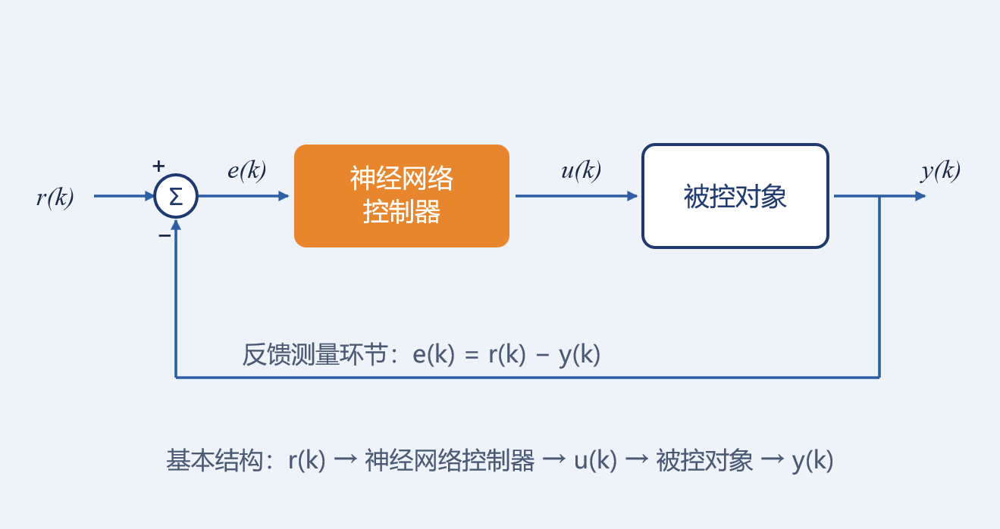
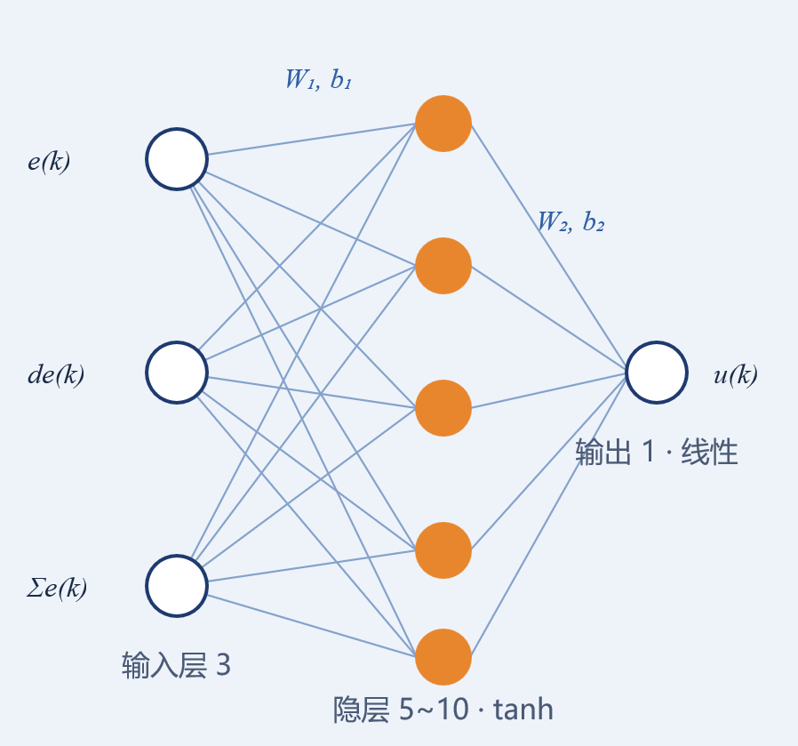
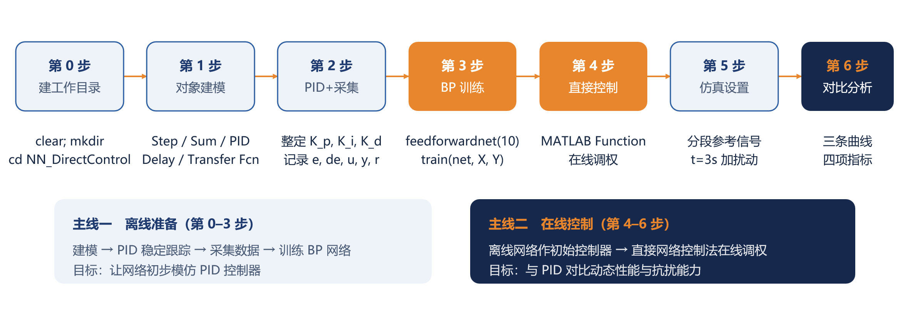
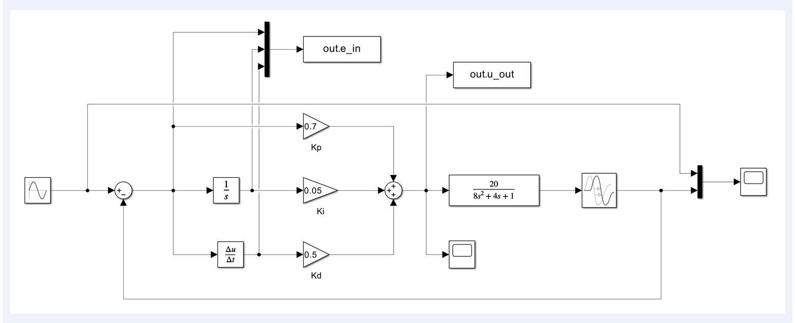
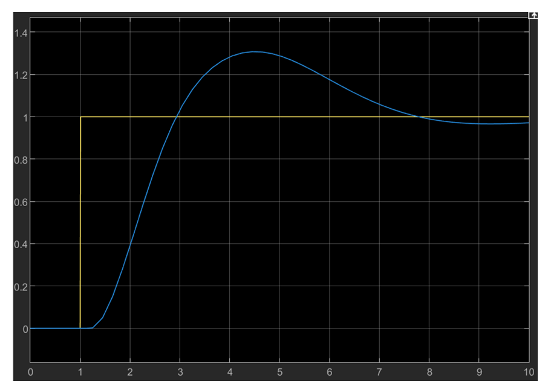
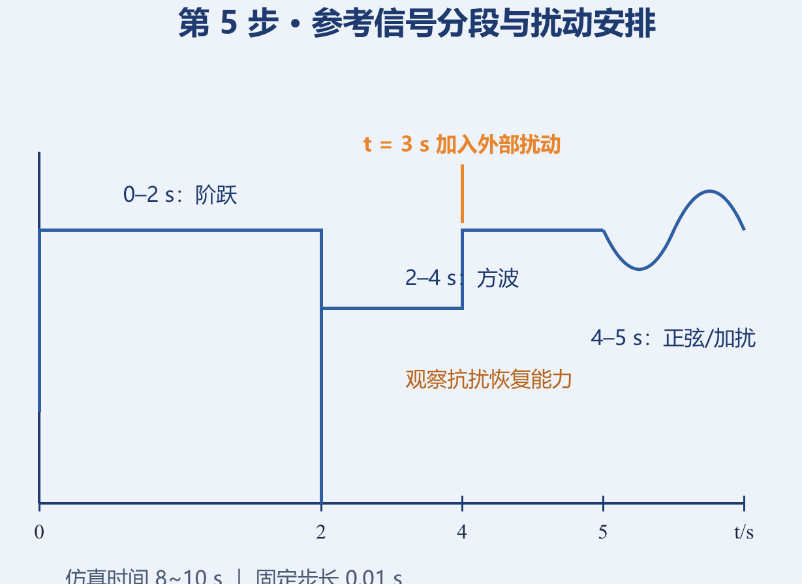

PPT 第 1 页
LECTURE 6 · EXPERIMENT
第六讲 神经网络控制系统实验
实验二 神经网络直接控制实验
PID 数据离线训练 BP 网络 → 直接网络控制法在线微调 → 与 PID 对比
PPT 第 2 页
实验导览
- 实验准备与任务书——软件环境 · 被控对象 · 六项实验任务
- 控制原理与设计原则——系统组成 · 输入输出/归一化 · 离线数据 · 在线控制律 · 参数选择
- 知识点回顾——对象特性 · PID 控制 · BP 网络 · 直接网络控制法
- 实验步骤（第 0–6 步）——建模 → PID 采集 → BP 训练 → 直接控制 → 仿真对比
- 实验要求与评分标准——报告要求 · 评分表 · 加分项
- 思考题与常见问题排查——7 道思考 · 10 条排查
PPT 第 3 页
实验准备
- 1带电脑——每人一机，独立完成实验；
- 2预装 MATLAB——数值计算与网络训练脚本运行环境；
- 3预装 Simulink——搭建被控对象与控制系统仿真模型；
- 4预装 Deep Learning Toolbox——提供 feedforwardnet / train 等网络训练函数；
- 5建议 MATLAB R2020b 及以上——保证工具箱函数与 Simulink 模块兼容。
PPT 第 4 页
实验任务书（先明确任务）
已知一个二阶系统的传递函数为
$$G(s)=\frac{20}{8s^{2}+4s+1}\,e^{-0.2s}$$
设计神经网络控制器，使其具有良好的动态控制性能。具体任务如下：
- 1设计常规 PID 控制器，使系统能稳定跟踪阶跃信号；
- 2采集 PID 控制数据，包括误差 $e$、误差变化率 $de$、控制量 $u$；
- 3用 PID 数据离线训练 BP 神经网络控制器，让网络初步逼近 PID 控制效果；
- 4采用直接网络控制法，将训练好的神经网络作为初始控制器，根据跟踪误差在线调整网络权值，不单独辨识被控对象模型；
- 5比较 PID 控制与神经网络直接控制的效果，分析超调量、调节时间、稳态误差和抗扰能力；
- 加分项改变学习率、隐层节点数，分析对控制性能的影响。
PPT 第 5 页
被控对象分析
$$G(s)=\frac{20}{8s^{2}+4s+1}\,e^{-0.2s}$$
| 系统类型 | 开环增益 | 自然频率 | 阻尼比 | 纯延迟 |
|---|
| 二阶系统 | $K=20$ | $\omega_n=1/\sqrt{8}\approx0.354$ | $\zeta\approx0.707$ | $0.2\,\text{s}$（$=20$ 拍，$T_s=0.01\,\text{s}$） |
延迟环节会给控制带来相位滞后，PID 参数不能过大，否则容易振荡。
PPT 第 6 页
一、神经网络直接控制系统的组成
神经网络直接控制系统通常由以下部分组成：
- 1参考输入；
- 2神经网络控制器；
- 3被控对象；
- 4反馈测量环节；
- 5数据采集与离线训练模块；
- 6在线学习与权值更新模块。
基本结构为 $r(k)\to$ 神经网络控制器 $\to u(k)\to$ 被控对象 $\to y(k)$，反馈误差 $e(k)=r(k)-y(k)$。神经网络控制器根据误差和误差变化率进行控制，并通过在线学习调整权值。

神经网络直接控制系统基本结构：r(k) → 神经网络控制器 → u(k) → 被控对象 → y(k)，e(k)=r(k)−y(k)｜PPT 第 6 页
PPT 第 7–9 页
二、神经网络控制器的设计原则
1. 定义输入、输出变量（P7）
系统为单输入单输出系统。建议采用——输入：误差 $e(k)$、误差变化率 $de(k)$、累积误差 $\sum e(k)$；输出：当前控制量 $u(k)$。即：
$$u(k)=N_N\bigl(e(k),\,de(k),\,{\textstyle\sum} e(k);\,W\bigr)$$
其中 $W$ 为神经网络权值。
注意：本实验统一采用 $de(k)=\dfrac{e(k)-e(k-1)}{T_s}$，离线采集与在线计算必须一致。
2. 定义变量的归一化条件（P8）
建议对输入输出进行归一化，例如归一化到 $[-1,1]$。若实际误差较大，可设置比例因子：
$$E=K\_p\cdot e,\qquad DE=K\_d\cdot de,\qquad U=K\_i\cdot {\textstyle\sum} e(k)$$
| $K_p$ | $K_d$ | $K_i$ |
|---|
| 误差比例因子 | 误差变化率比例因子 | 累积误差比例因子 |
控制量建议限幅：$u\in[-6,\,6]$。
3. 设计离线训练数据：PID 数据（P9）
先用 PID 控制器控制被控对象，采集数据 $\{e(k),\,de(k),\,\sum e(k),\,u(k)\}$，其中 $e(k)=r(k)-y(k)$ 为跟踪误差，$de(k)=(e(k)-e(k-1))/T_s$ 为误差变化率（与统一定义一致），$\sum e(k)$ 为误差积分，$u(k)$ 为 PID 输出（导师信号）。
$$\text{训练样本输入：}\ X=\bigl[e(k),\,de(k),\,{\textstyle\sum} e(k)\bigr]^{T}\qquad \text{训练样本输出：}\ Y=u(k)$$
这样训练后的神经网络可以初步模仿 PID 控制器。
PPT 第 10–11 页
三、知识点回顾：PID 控制与 BP 网络
1. PID 控制回顾（P10）
位置式 PID：
$$u(k)=K_p\,e(k)+K_iT_s\sum_{i=0}^{k}e(i)+K_d\,\frac{e(k)-e(k-1)}{T_s}$$
增量式 PID：
$$\Delta u(k)=K_p\bigl[e(k)-e(k-1)\bigr]+K_iT_s\,e(k)+K_d\,\frac{e(k)-2e(k-1)+e(k-2)}{T_s}$$
PID 参数参考初始值：$K_p=0.5,\ K_i=0.1,\ K_d=0.05$。可用 PID Tuner 或手动整定；控制量建议限幅 $u\in[-6,\,6]$。
2. BP 神经网络回顾（P11）
单隐层 BP 网络：输入层 3 个节点，隐层 5～10 个节点（$\tanh$），输出层 1 个节点（线性）。

单隐层 BP 网络结构：3–(5~10)–1，隐层 tanh、输出线性｜PPT 第 11 页
前向计算：
$$h=\tanh(W_1x+b_1),\qquad u=W_2h+b_2$$
反向传播：
$$\delta_2=e,\qquad \delta_1=(W_2^{T}\delta_2)\odot(1-h^{2})$$
权值更新：
$$W_2\leftarrow W_2+\eta\,\delta_2h^{T},\qquad W_1\leftarrow W_1+\eta\,\delta_1x^{T}$$
离线训练的目标：让网络输出 $u$ 逼近 PID 输出（导师信号 $Y=u(k)$）。
PPT 第 12–13 页
设计原则 ④：在线直接控制律与雅可比近似
1. 在线直接控制律（P12）
直接网络控制法不单独辨识对象模型。设神经网络控制器与性能指标：
$$u(k)=N_N\bigl(e(k),\,de(k),\,{\textstyle\sum} e(k);\,W\bigr),\qquad J(k)=\tfrac{1}{2}e(k)^{2}$$
考虑对象纯延迟 $d$ 拍，权值更新公式为：
$$\Delta w(k)=\eta\,e(k)\,\frac{\partial y(k)}{\partial u(k-d)}\,\frac{\partial u(k-d)}{\partial w}$$
严格时 $d=0.2/T_s=20$ 拍（与对象 0.2 s 纯延迟对应）；课堂简化时可先忽略延迟，取 $d=1$：
$$\Delta w(k)=\eta\,e(k)\,\frac{\partial y(k)}{\partial u(k-1)}\,\frac{\partial u(k-1)}{\partial w}$$
2. 对象雅可比未知时的近似（P13）
若对象雅可比 $\dfrac{\partial y(k)}{\partial u(k-1)}$ 未知，可用符号函数近似或简单取 1：
$$\frac{\partial y(k)}{\partial u(k-1)}\approx\operatorname{sgn}\!\left(\frac{\partial y(k)}{\partial u(k-1)}\right)\qquad\text{或}\qquad \frac{\partial y(k)}{\partial u(k-1)}\approx 1$$
本对象开环正增益，故符号为正。若网络输出经过反归一化，则实际更新量中应包含输出反归一化增益：
$$\delta_2=e(k)\,\frac{J_p}{gain\_u}$$
其中 $J_p\approx\partial y/\partial u$，$gain\_u$ 为输出归一化增益。
直接网络控制法的核心：不需要显式辨识对象模型，但需要对象雅可比的近似信息。
PPT 第 14 页
设计原则 ⑤：学习率、动量因子与网络结构
| 参数 | 建议取值 |
|---|
| 学习率 $\eta$（离线训练） | $0.01\sim0.1$ |
| 学习率 $\eta$（在线微调） | $10^{-5}\sim10^{-3}$ |
| 动量因子 $\alpha$ | $0.1\sim0.5$ |
| 隐层节点数 | 5～10 |
| 激活函数 | 隐层 $\tanh$ · 输出层线性 |
| 初始权值 | 小随机数，例如 $[-0.5,\,0.5]$ |
在线调试顺序：先令 $\eta=0$，验证离线网络控制效果；再逐步增大 $\eta$，观察在线学习效果。
PPT 第 15 页
直接网络控制法回顾：直接 vs 间接
- 神经网络控制器直接与被控对象串联；
- 根据系统输出误差在线调整网络权值；
- 不单独建立对象辨识模型；
- 需要对象雅可比 $\partial y/\partial u$ 的近似（常用符号函数或常数近似）；
- 结构简单，易于在线实现。
| 项目 | 直接网络控制法 | 间接网络控制法 |
|---|
| 是否辨识对象 | 不显式辨识 | 需要辨识对象模型 |
| 雅可比获取 | 近似或符号函数 | 由辨识模型计算 |
| 结构 | 简单 | 复杂 |
| 鲁棒性 | 依赖近似 | 依赖辨识精度 |
| 本实验 | ✔ 采用 | ✘ 不采用 |
PPT 第 16–20 页
四、实验步骤（课堂分步操作）
步骤总览（P16）

实验步骤总览：主线一 离线准备（第 0–3 步，建模 → PID 采集 → BP 训练）；主线二 在线控制（第 4–6 步，直接控制 → 仿真对比）｜PPT 第 16 页
第 0 步：打开 MATLAB，建立工作目录（P17）
clear; clc; close all;
mkdir('NN_DirectControl');
cd('NN_DirectControl');
第 1 步：建立被控对象模型（P17）
在 Simulink 中搭建 PID 控制被控对象的仿真模型（含 Kp/Ki/Kd 增益、传递函数 $20/(8s^2+4s+1)$、示波器与 out.e_in、out.u_out 工作区记录）。仿真参数：仿真时间 8～10 s；固定步长 0.01 s；求解器固定步长离散或 ode4；布尔逻辑信号 OFF；零点穿越 OFF。

第 1 步参考模型：PID 控制被控对象的 Simulink 模型（K_p/K_i/K_d 增益 + Transfer Fcn + 工作区记录）｜PPT 第 17 页
第 2 步：设计 PID 控制器并采集数据（P18）
X = out.e_in.Data';
Y = out.u_out.Data';
数据检查：是否有发散；控制量是否限幅；PID 跟踪效果是否可接受。
建议：采集多种参考信号（阶跃、方波、加扰动），拼接成训练数据。
第 3 步：用 PID 数据训练 BP 神经网络（P18）
net = feedforwardnet(10);
net = train(net, X, Y);
训练完成后，用测试数据检查网络输出是否接近 PID 输出。
第 4 步：搭建神经网络控制（P19）
gensim(net, -1);
下图为神经网络控制仿真运行的阶跃响应示例（示波器截图）：

神经网络控制仿真运行示例（Scope：参考输入与系统输出）｜PPT 第 19 页
第 5 步：仿真设置（P19）
仿真时间 8～10 s，固定步长 0.01 s；参考信号分段安排，并在 $t=3\,\text{s}$ 加入外部扰动，观察抗扰恢复能力。记录：参考输入 $r$、系统输出 $y$、跟踪误差 $e$、控制量 $u$、权值变化。

参考信号分段：0–2 s 阶跃；2–4 s 方波；4–5 s 正弦/加扰；t = 3 s 加入外部扰动｜PPT 第 19 页
第 6 步：保存与对比（P20）
分别运行三种控制方案：
- ①PID 控制——常规 PID，作为性能基准；
- ②NN 离线控制——仅离线训练的网络（$\eta=0$），检验模仿效果；
- ③NN 在线控制——直接网络控制法在线微调权值。
对比指标（填入实验报告）：
| 控制器 | 超调量 | 调节时间（2% 误差带） | 稳态误差 | 抗扰恢复时间 |
|---|
| PID | | | | |
| NN 离线 | | | | |
| NN 直接 | | | | |
PPT 第 21 页
五、实验任务书（正式版）
已知一个二阶系统的传递函数为 $G(s)=\dfrac{20}{8s^{2}+4s+1}e^{-0.2s}$。
| 分值 | 任务 | 要求 |
|---|
| 20% | 设计常规 PID 控制器 | 使系统稳定跟踪阶跃信号 |
| 30% | 采集 PID 数据并训练 BP 神经网络控制器 | 网络初步逼近 PID 控制效果 |
| 50% | 直接网络控制法离线控制并对比 | 与 PID 比较超调量、调节时间、稳态误差、抗扰能力 |
| +10% | 改变学习率、隐层节点数，分析对控制性能的影响 | 加分项 |
PPT 第 22 页
六、实验要求
- 1报告结构完整，含实验目的、原理、步骤、数据、结论；
- 2图表清晰，编号规范，如“图 1 PID 控制系统 Simulink 模型”；
- 3给出直接网络控制系统的结构图；
- 4给出神经网络前向计算和权值更新公式；
- 5给出 PID、NN 离线两种情况的对比曲线；
- 6分析学习率、隐层节点数、雅可比估计对控制性能的影响；
- 7提交程序源代码和实验报告；
- 8提交途径：雨课堂；
- 9截止时间：11 月 3 日 24:00。
报告核心三要素：结构图 · 公式 · 两条对比曲线。
PPT 第 23 页
八、思考题
- Q1为什么先用 PID 数据训练神经网络？有什么好处？
- Q2直接网络控制法与间接网络控制法有什么区别？
- Q3直接网络控制中为什么需要对象雅可比？未知时如何处理？
- Q4学习率过大或过小分别会出现什么现象？
- Q5隐层节点数对控制性能有什么影响？
- Q6如果对象延迟增大，直接网络控制会遇到什么问题？
- Q7能否设计在线学习方法？如何实现？
PPT 第 24 页
九、常见问题与排查
| 问题 | 可能原因 | 解决方法 |
|---|
| 网络发散 | 学习率过大 | 减小 $\eta$，加限幅 |
| 跟踪效果差 | 训练数据不足 | 增加参考信号类型 |
| 控制量振荡 | 雅可比估计不准 | 用符号函数或差分估计 |
| 在线学习破坏离线效果 | 在线学习率过大 | 先设 $\eta=0$，再逐步增大 |
| 仿真步长与采样不一致 | Simulink 设置错误 | 固定步长 0.01 s |
| 归一化不一致 | 在线未用相同归一化参数 | 保存 psX, psY 并在线调用 |
| 在线函数第二次调用报错 | psX, psY 未设为 persistent | 将 psX, psY 加入 persistent |
| 离线/在线效果差异大 | $de$ 定义不一致 | 统一为 $(e(k)-e(k-1))/T_s$ |
| 网络输出尺度不对 | fitnet 自动归一化与手动归一化冲突 | 禁用 fitnet 自动归一化 |
| 在线更新量过大 | 未考虑输出反归一化增益 | 更新中加入 /psY.gain(1) |
PPT 第 25 页
总结
先用 PID 数据让神经网络“学会初步控制”，
再切换到直接网络控制法在线调整权值，
最后与 PID 控制进行对比。
提交：实验报告 + 源代码，途径：雨课堂（截止 11 月 3 日 24:00）。